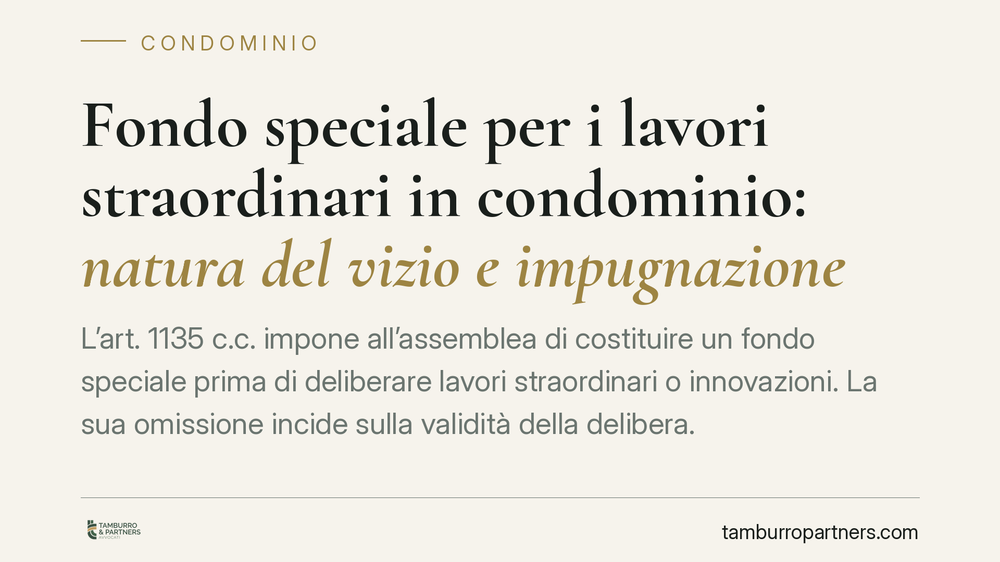

Fondo speciale per i lavori straordinari in condominio: natura del vizio e impugnazione
L'art. 1135 c.c. impone all'assemblea di costituire un fondo speciale prima di deliberare lavori straordinari o innovazioni. La sua omissione incide sulla validità della delibera. Occorre però chiarire la natura del vizio: secondo l'orientamento prevalente si tratta di annullabilità, impugnabile nei trenta giorni, e non di nullità rilevabile in ogni tempo.

Il fatto
L'approvazione di lavori straordinari è tra le decisioni condominiali più delicate. Dal 2013, l'art. 1135, comma 1, n. 4, c.c. subordina la deliberazione di opere di manutenzione straordinaria e di innovazioni alla contestuale costituzione di un fondo speciale di importo pari all'ammontare dei lavori.
Si tratta di un vincolo pensato per tutelare sia i condomini sia l'impresa appaltatrice, garantendo che la spesa sia coperta prima dell'avvio del cantiere. Ricorre con frequenza una domanda: cosa accade se l'assemblea delibera i lavori senza costituire il fondo?
Inquadramento normativo
La norma è chiara nel prescrivere l'obbligo. Più controversa è la qualificazione del vizio che colpisce la delibera adottata in violazione di tale obbligo.
La questione va letta alla luce della distinzione tracciata dalle Sezioni Unite della Cassazione (sent. n. 9839/2021). Le Sezioni Unite hanno ristretto l'area della nullità ai vizi più radicali: oggetto impossibile o illecito, difetto assoluto di attribuzioni dell'assemblea, incidenza su diritti individuali dei condomini. Tutti gli altri vizi, in particolare quelli attinenti al procedimento di formazione della volontà assembleare, ricadono nell'annullabilità disciplinata dall'art. 1137 c.c.
L'omessa costituzione del fondo speciale si colloca, secondo l'orientamento prevalente, tra i vizi procedurali. Ne consegue che la delibera è annullabile, con impugnazione da proporre entro il termine di decadenza di trenta giorni (che decorre dall'adozione per i presenti dissenzienti o astenuti, dalla comunicazione del verbale per gli assenti). Non si tratta, dunque, di una nullità deducibile in ogni tempo e da chiunque.
Esiste una tesi minoritaria che qualifica il vizio come nullità, facendo leva sulla natura imperativa dell'obbligo. È però un'impostazione non consolidata: presentarla come regola rischia di indurre a non impugnare nei termini, con la conseguenza che la delibera, se non annullata tempestivamente, diviene definitiva e vincolante.
Va ricordato inoltre che il fondo può essere costituito per l'intero importo dei lavori, oppure, quando i lavori sono affidati con contratto che prevede un pagamento graduale in funzione dello stato di avanzamento, per singole tranche. In quest'ultimo caso la costituzione del fondo è consentita in rapporto a ciascun pagamento previsto.
Implicazioni pratiche
Per l'amministratore. La semplice approvazione del preventivo non equivale allo stanziamento del fondo. Sono due passaggi distinti: il primo individua la spesa, il secondo la copre finanziariamente. L'omissione del fondo espone la delibera all'impugnazione e può riflettersi sulla posizione dell'amministratore in caso di contenzioso o di inadempimento verso l'impresa.
Per il condomino. Chi intende contestare una delibera priva di fondo speciale deve agire con tempestività. Trattandosi di annullabilità, il decorso dei trenta giorni preclude l'impugnazione e consolida la decisione, anche se viziata. Attendere confidando in una presunta nullità è una scelta rischiosa.
Per l'impresa appaltatrice. Il fondo speciale è una garanzia di provvista. L'impresa ha interesse a verificare che la delibera che le affida i lavori rechi la costituzione del fondo, poiché ciò incide sulla solidità dell'impegno di spesa e sulla stabilità stessa della decisione assembleare.
Cosa fare in concreto
- Verificare che l'ordine del giorno dell'assemblea preveda, accanto all'approvazione dei lavori, la costituzione del fondo speciale.
- Distinguere nel verbale l'approvazione del preventivo dallo stanziamento del fondo: sono atti non equivalenti.
- Per i lavori a esecuzione periodica, valutare la costituzione del fondo per tranche in corrispondenza degli stati di avanzamento.
- In caso di delibera priva di fondo, calcolare con precisione il termine di trenta giorni per l'impugnazione, senza fare affidamento su una presunta imprescrittibilità del vizio.
- È opportuno sottoporre a verifica preventiva le delibere di spesa straordinaria di importo rilevante, prima dell'avvio del cantiere.
Contributo informativo a cura di Tamburro & Partners - Avv. Giuseppe Tamburro. Non costituisce parere legale.
Ogni condominio ha una storia a sé.
Se gestisci un'amministrazione e vuoi un confronto su una specifica questione condominiale, scrivi allo studio. Ti rispondiamo entro un giorno lavorativo.